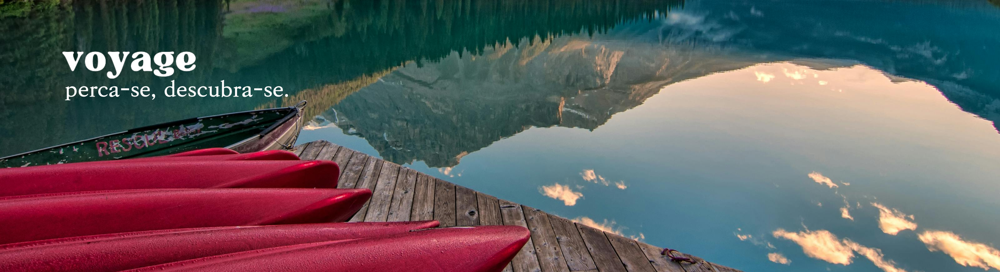

Destinos

Mais visitados pelos brasileiros
| Destino | Ponto turístico | Clima |
|---|---|---|
| Rio de Janeiro (RJ) | Cristo Redentor | Tropical |
| São Paulo (SP) | Parque Ibirapuera | Suptropical |
| Gramado (RS) | Parque Snowland | Subtropical úmido |
| Ubatuba (SP) | Praia da Almada | Tropical |
| Porto Seguro (BA) | Rua do Mucugê | Tropical úmido |
| Florianópolis (SC) | Santo Antônio de Lisboa | Subtropical úmido |
| União (PI) | Cachoeira da Formosa | Tropical semiárido |
Dicas de viagem
Quais erros evitar quando for fazer o câmbio?
. Trocar dinheiro de uma vez só, e ainda de última hora.
. Comprar moedas exóticas no Brasil.
. Mau planejamento da viagem.
Viagem marcada. Como se preparar?
Conheça a cultura, a língua, a comida e as tradições do lugar que você está visitando. Isso pode ajudá-lo a aproveitar melhor a experiência e evitar problemas culturais.
Como se livrar das filas nos aeroportos?
. Chegue no aeroporto com no mínimo 2h de antecedência do horário do seu vôo..
. Após fazer check-in e despachar a mala, não dê bobeira no aeroporto, passeando, comendo, conversando etc. Embarque imediatamente.
. Já antecipe tirando computador e líquidos da mala antes de chegar ao Raio-X. Jaqueta, cintos e moedas dos bolsos também devem ser retirados. Faça-o durante a fila também, para agilizar.
. Após passar no Raio-x e detector, deixe para se vestir e guardar as coisas fora da esteira.
. Leve seus líquidos em saquinhos com fechamento tipo “zip-loc”.
Extra
. Basta ir, viaje sem medo.